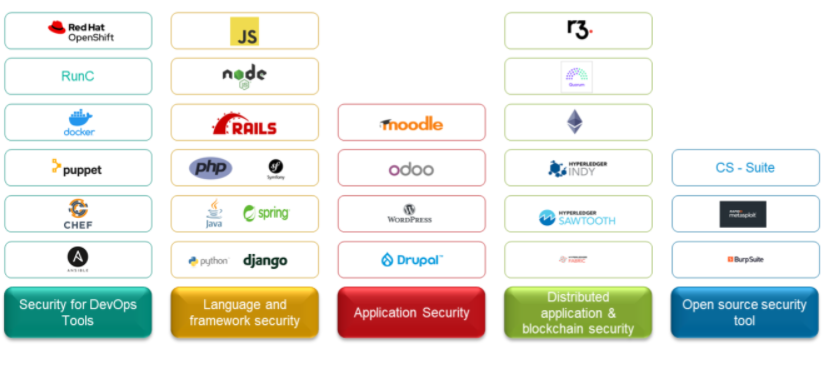

We have grouped various open source technologies into 5 main categories. By doing so, it will help us to take appropriate security measures and processes to enhance the security of these open source tech stacks.
We should be able to accommodate almost all the existing open source technologies in any one of the 5 categories. The categories are defined based on the common characteristics and usage of the respective open source technologies.

At present, All tech stack and related applications are under Requirement gathering and analysis phase.
Once Requirement gathering and analysis phase completed, each tech stack will be updated with another column named security status which indicates the current security vulnarabilities and fixes status of that application.
Security for DevOps Tools
This security stack focuses on all kinds of open source tools used in DevOps and how they can be secured both in terms of it source code and its implementation. This would enable users to implement DevSecOps using secured DevOps tools. The identified DevOps tools will be assessed for security vulnerabilities and remediated.
All are in requriment gathering and analysis Phase (R G&A)
Ansible
| Sl.No | BeSman Env name | Dependencies | Entities Prebundled in BeSman Env | Status |
|---|---|---|---|---|
| 01 | bes-ansibledev-env | Python, Ruby, bash, ansible-galaxy | Git, Python, Pypi, VScode, Jenkin, Ansible-galaxy | R G&A |
| 02 | bes-ansiblesec-env | Java, Jenkin, bes-appsastsec-env, Python, Pypi | R G&A |
Chef
| Sl.No | BeSman Env name | Dependencies | Entities Prebundled in BeSman Env | Status |
|---|---|---|---|---|
| 01 | bes-chefdev-env | Ruby (client) and Ruby / Erlang (server) | Git, RVM, Ruby, Erlang, VSCode, ChefSpec, Jenkin | R G&A |
| 02 | bes-chefsec-env | Git, RVM, bes-appsastsec-env, bes-appdastsec-env | R G&A |
Need help to view the utility version ? click here
Language and Framework security
This security stack focuses on all open source programming languages and its associated frameworks that are used to build various applications. These programming languages will be assessed and their vulnerabilities remediated.
Python-Django
| Sl.No | BeSman Env name | Dependencies | Entities Prebundled in BeSman Env | Status |
|---|---|---|---|---|
| 01 | bes-pythonDjangodev-env | Git, Python, VSCode, pytest, jenkins | R G&A | |
| 02 | bes-pythonDjangosec-env | Git, bes-appsastsec-env, bes-pensec-env, Pypi, Python | R G&A |
Java-Spring
| Sl.No | BeSman Env name | Dependencies | Entities Prebundled in BeSman Env | Status |
|---|---|---|---|---|
| 01 | bes-javaSpringdev-env | Git, openJDK, Apache Maven, Junit, Selenium, Jenkins | R G&A | |
| 02 | bes-javaSpringsec-env | Git, openJDK, bes-appsastsec-env, bes-pensec-env, | R G&A |
Need help to view the utility version ? click here
Application security
This security stack focuses on all open source applications and how they can be secured.
Drupal
| Sl.No | BeSman Env name | Dependencies | Entities Prebundled in BeSman Env | Status |
|---|---|---|---|---|
| 01 | bes-drupaldev-env | TBD | R G&A | |
| 02 | bes-drupalsec-env | TBD, bes-appsastsec-env, bes-appdastsec-env, bes-pensec-env | R G&A |
Odoo
| Sl.No | BeSman Env name | Dependencies | Entities Prebundled in BeSman Env | Status |
|---|---|---|---|---|
| 01 | bes-odoodev-env | TBD | R G&A | |
| 02 | bes-odoosec-env | TBD, bes-appsastsec-env, bes-appdastsec-env, bes-pensec-env | R G&A |
Need help to view the utility version ? click here
Distributed Application and Blockchain Security
This security stack focuses on all open source based distributed applications and blockchain frameworks. Majority of blockchain frameworks are open source in nature.
Hyperledger Indy
| Sl.No | BeSman Env name | Dependencies | Entities Prebundled in BeSman Env | Status |
|---|---|---|---|---|
| 01 | bes-hyperledgerIndydev-env | Git, Python, Pypi, VSCode, Indy-node, Indy-sdk, crypto, Jenkins | R G&A | |
| 02 | bes-hyperledgerIndysec-env | TBD, bes-appsastsec-env, bes-appdastsec-env, bes-pensec-env, Git | R G&A |
Hyperledger Fabric
| Sl.No | BeSman Env name | Dependencies | Entities Prebundled in BeSman Env | Status |
|---|---|---|---|---|
| 01 | bes-hyperledgerFabricdev-env | Git, Go, NPM, Docker, NodeJS, Jnekins, Docker compose, VSCode | R G&A | |
| 02 | bes-hyperledgerFabricsec-env | Git, Go, bes-appsastsec-env, bes-appdastsec-env, NPM, Docker | R G&A |
Need help to view the utility version ? click here
Open source Security Tool
This security stack focuses on all open source security tools and to secure these tools for utilization.
Application Security Testing (SAST )
| Sl.No | BeSman Env name | Dependencies | Entities Prebundled in BeSman Env | Status |
|---|---|---|---|---|
| 01 | bes-appsastsec-env | SAST-LGTM, Sonarqube, Semgrep, Gosec, OpenVAS, Vega, Grabber | R G&A |
Application Security Testing (DAST)
| Sl.No | BeSman Env name | Dependencies | Entities Prebundled in BeSman Env | Status |
|---|---|---|---|---|
| 01 | bes-pensec-env | DAST - ZAP, GoLismero, Metasploit, Burp Suite CE | R G&A |
Penetration Testing
| Sl.No | BeSman Env name | Dependencies | Entities Prebundled in BeSman Env | Status |
|---|---|---|---|---|
| 01 | bes-pensec-env | Kali Linux, Parrot Sec | R G&A |
Need help to view the utility version ? click here